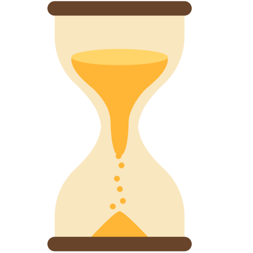

Daibase and the DAIX tokens are still in testing phase. Do not buy any tokens from anyone claiming to sell any Daibase tokens to avoid being scammed.
We're looking for testers! If you want o contribute, head towards ourTelegram groupto participate. Please use the control panel provided in theLaboratory section.
It is expected that Daibase will debut on the xDAI blockchain in the Second Week of April '21.
DAIX is a cross-chain compatible array of tokens that target the multi-collateral DAI stablecoin.
Native DAIX tokens are non-collateralized algorithmic stablecoins, issued on multiple chains:
xDAIX : xDAI blockchain
bDAIX : Binance Smart Chain
oDAIX : Harmony (ONE)
mDAIX : Polygon (MATIC)
eDAIX : Ethereum
… and more to come!
Why do we need DAIX?
Chances are, you have used ERC20-DAI and other similar assets on Ethereum.
But now, along with the cryptocurrency prices, the transaction costs have also gone up, and aren't essentially too attractive as compared to the competetive blockchain solutions of today, like xDAI.
DAIX brings a brand new sub-asset class to the most efficient, day-to-day use blockchains.
Discover DAIX Ecosytem!
Where to find DAIX tokens?
DAIX protocol strives to be multi-chain compatible.
Native DAIX stablecoins will be launched on multiple blockchains, including Binance Smart Chain (BSC), Polygon (MATIC), Solana ($SOL) and Ethereum.
First listing will be at Honeyswap of the xDAI blockchain network.
You can also generate xDAIX (DAIX native to xDAI blockachain) by simply sending some xDAI coins to the DAIX smart contract. Kindly use a "gas limit" of 500000 (500k).
Discover DAIX Ecosytem!
How do these DAIX stabilize?
When the price of any DAIX is above 1 DAI (roughly $1) in the open market, DAIX coins are sent across all addresses upto the amount which brings the price back to 1 DAI inthe open markets.
Similarly, when the price falls under a DAI, the stabilization mechanism makes all users burn their DAIX tokens!
Apart from this, there is a tiny fees that goes to the promotional aspect of DAIX: Farms and Vaults, which help secure the DAIX against flash attacks by locking up (staking) *DAIX tokens. All DAIX users can participate in these promotional events and earn rewards!
Anyone can make 1 DAIX equal 1 DAI at the press of a big button below!
DAIX Protocol is introduced and public testing begins!
The ideas behind DAIX tokens are introduced publicly and initial development begins in the later weeks of March 2021.
First official testing was scheduled for 31st March (Wednesday).
Initial 'premiere' unviels $XDAIX on xDAI blockchain.
The first mainnet version of DAIX Protocol will be launched on the xDAI network : also better known as the most stable "Layer 2" blockchain. It will be first listed on Honeyswap AMM-DEX for the public to trade.
Tester's Control Panel
Please switch to Ropsten Testnet (Chain ID:3) to test v0.1.37
You're not connected
DAIX Contract
Nameless
Full Name
UNKNOWN
Token Symbol
Nothing
Your Balance
Timeless
Epochs Elapsed
Zero
Base Block
Uncountable
Total Supply
Undefined
Tax per billion
someone's balance
a pair's price
Scope of Testing
The chief objective of the testing phase of Daibase Smart Contracts is to ensure seamless quality and provide valuable feedback for improvment prior to launching v1.0.0 of DAIX Contracts. The main testing platform will be the various Ethereum testnets (Kovan & Ropsten) with focus on post-Istanbul architecture compatibility.
DAIX is not a fork.
Nor does it use any previously deployed Economic model. All major features of Daibase are a product of direct innovation and hence we call it "An Experimental Decentralized Finance" project.Daibase's primary contract ("core") is an ERC20 standard compliant smart-contract. It is capable of orchestrating an Elastic Supply book-keeping for its various users
To ensure expected behaviour, we will test the following aspects and make sure of their accuracy and precision:
Please note that during testing of upto v0.1.37 contracts, we shall be treating ETH as if it were XDAI. i.e. 1 ETH represents 1 XDAI. The "ETH/DAIX" pair of Uniswap AMM\DEX will be referred to as the "First Pair".
Sending & Receiving DAIX tokens
Make sure the amount you send or receive is the amount that was transacted.
Check if the Block Explorer shows the correct amounts in the transaction details.
Inspect your wallet balance manually from the Explorer and Control Panel for a match with your wallet balance
Verify if the per trasaction tax is 2% of the amount sent by sender. The receiver would receive 98%
NOTE: There is no transaction tax for amounts smaller than 0.00000001 DAIX.
Adding and Removing Liquidity
Try to add and remove liquidity from any AMM of your choice.
Use partial or fractional amounts as well as 100% while testing.
Move around your L.P. Tokens
Redeem your liquidity from a different address.
NOTE: We will test with Uniswap (WETH, UNI, DAI) and Sushiswap (WETH, USDC, UNI) pairs initially. Anyone can list DAIX anywhere, but there might be some errors encountered, which can be resolved by calling the "SYNCHRONIZE" function that removes any such bugs ("k-errors"). For this method to be effective, each new pair will have to be added to the Smart Contract manually. This shall be decided by the DaixDAO voting at later stages post launch, or simply be recommended by the community prior launch at any of our Social channels (links below).
Swapping DAIX
Perform simple swaps: ETH to DAIX, DAIX to ETH.
Attempt Token to Token swaps: UNI to DAIX, DAIX to USDC, DAIX to DAI, etc.
Attempt multi-hop swaps, if possible: DAIX to UNI to USDC, UNI to DAI to DAIX, etc.
Attempt flash swaps, if possible: DAIX to UNI to USDC to DAIX, etc.
NOTE: Use a slippage of an additional 2% for each "hop" (due to the DAIX moving penalty of 2% on each move). A slippage tolerance of 3% to 5% is recommended.
Direct trustless buying (from DAIX Contract)
Send a small amount of ETH (0.0001) to the Token's contract address to get back an equivalent worth of DAIX tokens based on the current market price.
Try to "hit the BaseCannon" before making such a purchase to receive DAIX at a 1:1 price.
Attempt sending some ETH via a Smart Contract that is capable to recieve DAIX (Flashing), if possible.
NOTE: Read more about the "Need" of this mechanism in ourGoldpaperand learn how Daibase is poised to become the b̶a̶c̶k̶b̶o̶n̶e̶ Vertebrae of the Permissionless Future..
DEV NOTE: This the default "receive()" method which generates an internal call to "parti()", which upon success returns an unsigned integer of 16 Bytes, representing the amount of DAIX sent to the caller, emitting the "Partied" event. If you are a buidlr, we welcome you to stack over and under us in your Legonomics.
Hit the BaseCannon
Push the "BaseCannon" button from the Control Panel, and sign the generated transaction. Doing this will create a new "Epoch" and "Synchronize" the Daibase Ecosytem on the respective chain. Expected behaviour: At confirmation, the price in the "First Pair" would be restabilized to unity (1:1).
NOTE: Please note down your balance provided from the Control Panel, Explorer or Wallet. Additionally, note down the balances and reserves of the trading pairs. After the transaction succeeds, instantly compare and recheck if these numbers behave as per design. The balances will be sent more DAIX tokens if the price at the time of Stabilization is over unity. The converse will also hold, and the users would burn their tokens on account of setting the Ecosystem back to equilibrium (1 DAIX = 1 DAI).
Synchronize the Daibase Ecosytem
Pressing the "Synchronize" button from the Control Panel.
NOTE: This is useful if you are experiencing an unusual Swap error ("This seems to be an error with one of the Tokens your're using"/"k-error"/undefined/"Insufficient Output Token Amount"), pressing this button should resolve it. Each call of BaseCannon also includes an internal call to Synchronize.
Known Bugs
"This seems to be a problem with one of the tokens you're using"
It has been found that this situation can be solved by the below methods:
Increasing Slippage Tolerance to 3% or more depending on the number of "hops", or intermediary tokens traversed during your swap.
A slippage of 5% is enough to Add or Remove liquidity. Using 3% for simple ETH/DAIX pairs is ample.
"Error: Undefined"
Such a error arises if there's a disbalance in the pairs balances and the count of its reserves in its memory. This is common in newly listed pairs and can be cured by:
Making a "multi-hop" swap.
Executing a "flash" swap.
Having the pair contract added to the Daibase "core" smart contract. This can be done only by the DaixDAO voting if DAIX has already launched. Such a pair must have adequate liquidity to be eligible/adopted by the DAO because adding a new pair results in increased costs for each new epoch.
Hitting the BaseCannon can cure it sometimes.
Synchronizing also can solve this issue, and would be cheaper than creating a new Epoch.
Exceptions
Don't send more than 10 Billion coins (ETH/XDAI/BNB/ONE,etc.) to the contract for a direct purchase or parti().
Don't hit the BaseCannon twice within 42 blocks (about 10 min. on Eth, 3-4 mins. on xDAI and Polygon, 2 min. on BSC and Tron, 84 secs. on Harmony, etc.).
NOTE: This limit is reduced to 4 Blocks during the testing phase.
"FAIL: OUT OF GAS"
This can occur when sending native coins (XDAI/ETH/BNB/ONE/MATIC/TRX,etc.) to the DAIX Smart Contract. It happens due to MetaMask or other Wallets erroneously ascribing a "Gas Limit" of "21000". We suggest manually editing it to "500000" (Five hundred thousands) instead.
Those who make the biggest sacrifices within the last 210000 blocks, get Crowned the legitimate Heir and receive 2% from each DAIX transaction!
Nobody yet is The Chosen One on xDAI Chain!
To become The Chosen One, you must donate 1 XDAI to the KingMaker smart contract, 8% further than the previous sacrifices.

Alternatively, you could await The Chosen One to step down from the throne at sometime within the next 210000 blocks.
Important note: There was never, and will be no "pre-sale".
Using smart contracts and cryptocurrencies entail significant risks. The users and only the users themselves are responsible for each of their actions. DAIX Protocol is a highly experimental project and guarantees no profits. All information given here or from any other "official" sources are only for educational purposes and does not constitute of financial advice of any order.